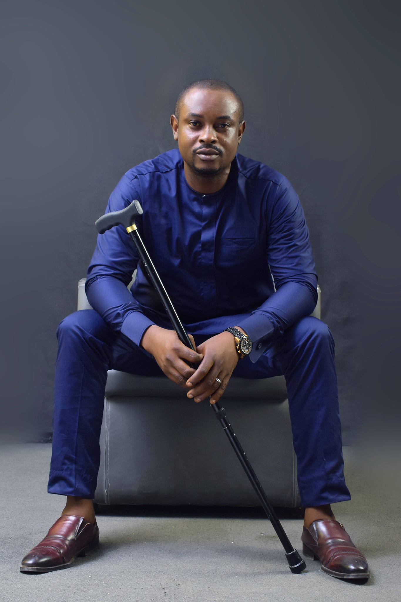
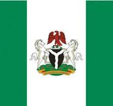

About Me
My name is Osahon Okoro, an academic and technology consultant deeply committed to solving real-world problems through innovation. I currently serve as an Assistant Research Lecturer in the Department of Computer Science at the University of Calabar, Nigeria. With a background in Electrical and Electronics Engineering (University of Benin) and a Master’s in Computer Science (University of Calabar), I am now completing a Ph.D. in Computer Science, focusing my research on emerging security technologies.
I am actively training and equipping myself in the fields of machine learning, computer vision, and network security — with a clear mission: to develop intelligent security solutions that can support authorities in tackling Nigeria’s pressing security challenges. My goal is to bridge the gap between advanced research and practical implementation, particularly through smart surveillance, anomaly detection, and IoT-enabled monitoring systems.
Through my consulting firm, Sydnet Solutions Limited, established in 2012, I have led several projects across the public and private sectors, including work with international organizations like the United Nations. I believe technology — when localized and purposefully applied — can become a cornerstone in strengthening national and community security in Nigeria.
Outside work, I enjoy reading, cooking, traveling, and playing chess — activities that continue to sharpen both my creativity and strategic thinking.
Web Dev Resources
Nigeria
Nigeria, officially the Federal Republic of Nigeria, is a West African nation bordered by Niger, Chad, Cameroon, and Benin. It spans over 923,000 square kilometers and is home to more than 230 million people—making it Africa’s most populous country and the sixth-most populous in the world. Its capital is Abuja, while Lagos is the largest city and one of the biggest metropolitan areas globally. Nigeria has a rich and diverse history, with ancient civilizations like the Nok culture, the Hausa Kingdoms in the north, the Yoruba empires in the southwest, and the Benin and Igbo kingdoms in the south and southeast. British colonization in the 19th century led to the formation of modern-day Nigeria, which gained independence on October 1, 1960. Since then, it has faced civil war, military rule, and democratic transitions—stories that touch the heart and reflect the country's resilience.
With over 250 ethnic groups and more than 500 spoken languages, Nigeria is a true cultural mosaic. The three largest ethnic groups are the Hausa, Yoruba, and Igbo. English is the official language, and the country is nearly evenly split between Islam and Christianity. Known as the "Giant of Africa", Nigeria plays a key role in regional and global affairs, with a growing economy and a powerful cultural influence through music, film, and literature.